내 와인과 셀러 관리
어느 셀러에 어떤 와인이 있는지, 같은 와인이 몇 병 남았는지 한눈에 살펴보세요. 셀러의 층과 자리를 실제 보관 모습에 맞게 구성하고, 같은 와인도 한 병씩 구분해 관리할 수 있습니다. 셀러에 넣지 않은 와인은 위치 미지정으로 보관하시면 됩니다.

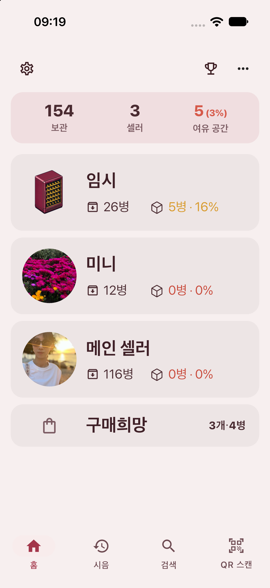

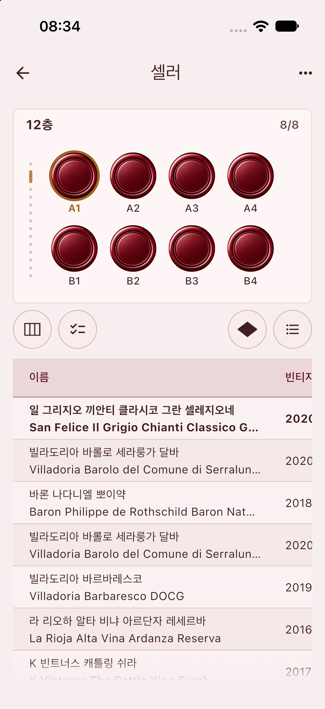
Features
내 와인이 어디에 있는지, 얼마나 남았는지, 어떤 순간에 맛있었는지.
보관부터 시음까지, 나의 와인 기록을 차곡차곡 남겨보세요.
와인을 들이고, 보관하고, 마신 뒤의 기억을 남기는 일까지. 내 와인 생활에 필요한 기능을 살펴보세요.
어느 셀러에 어떤 와인이 있는지, 같은 와인이 몇 병 남았는지 한눈에 살펴보세요. 셀러의 층과 자리를 실제 보관 모습에 맞게 구성하고, 같은 와인도 한 병씩 구분해 관리할 수 있습니다. 셀러에 넣지 않은 와인은 위치 미지정으로 보관하시면 됩니다.


조금씩 나누어 마신 와인도 마신 양과 남은 양을 기록할 수 있습니다. 평점과 사진, 메모뿐 아니라 바디·탄닌·당도·산미와 향미도 남겨보세요. 한 병에 여러 번의 시음 기록을 쌓을 수 있고, 사진 목록에서는 라벨과 그날의 기억을 함께 되짚어볼 수 있습니다.
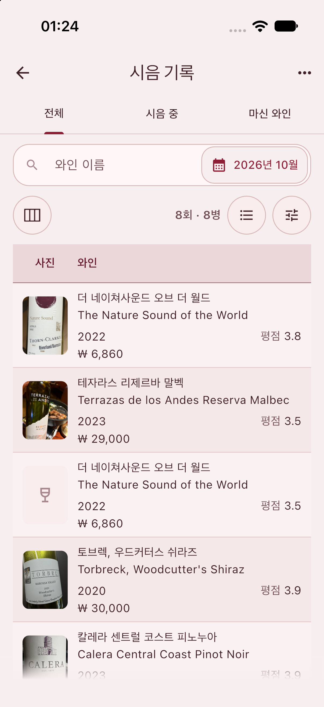
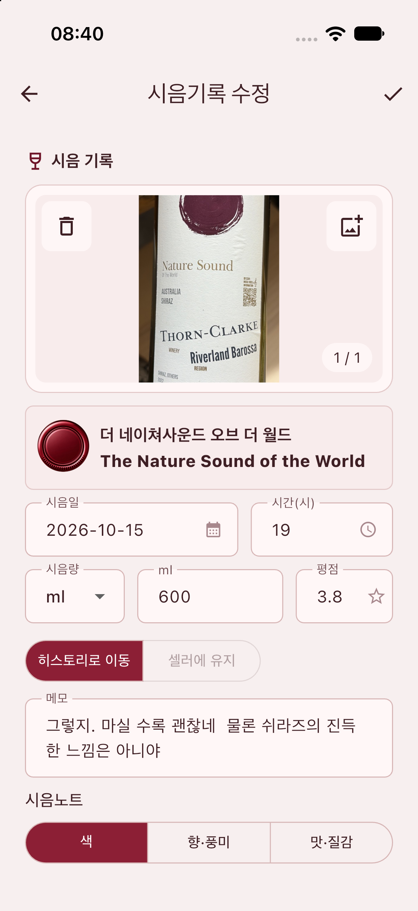
셀러를 정리할 때는 종류·국가·시음 적기를 기준으로 배치를 계획하거나, 원하는 정리 기준을 직접 정할 수 있습니다. 배치 미리보기를 확인한 뒤 한 병씩 옮기거나 모두 꺼내 다시 넣는 방식으로 진행해 보세요. 몇 병만 옮길 때는 간단 정리에서 이동·자리 교환·미지정 처리를 할 수 있습니다.
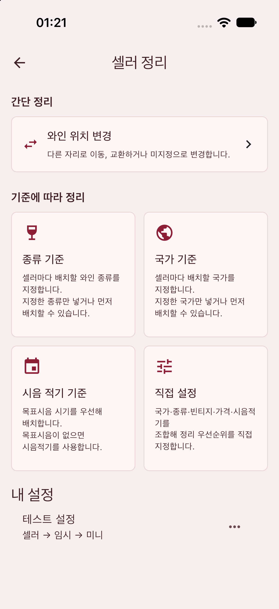
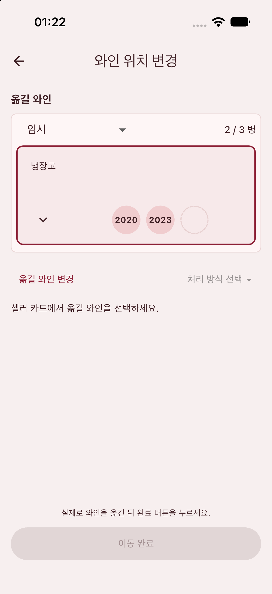
와인명으로 찾거나 셀러·종류·국가·빈티지·시음 적기 등의 조건으로 목록을 좁혀보세요. 보고 싶은 열과 정렬 순서도 바꿀 수 있습니다. 개별 병과 같은 와인별 보기를 오가며 보관량을 살피고, 같은 와인의 구매·시음 이력도 함께 확인할 수 있습니다.
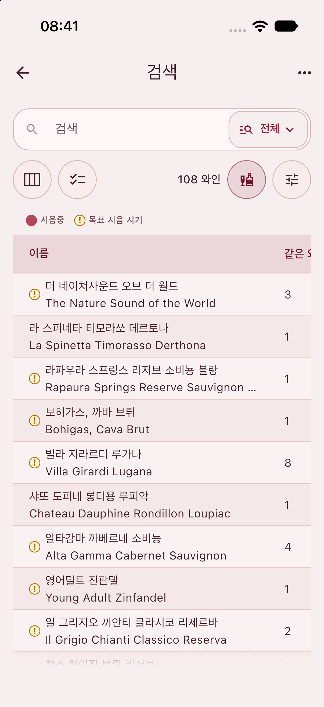
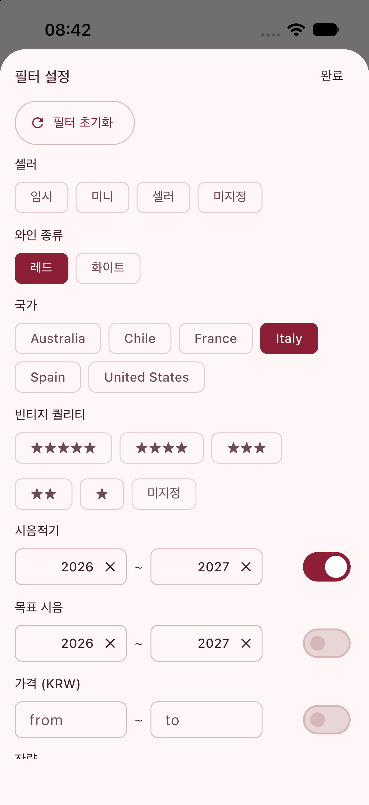
지금 보관 중인 와인부터 그동안의 시음과 구매까지, 쌓인 기록을 현황 화면에서 살펴보세요. 종류·국가·빈티지 등의 분포를 보고, 관심 있는 항목을 눌러 해당 와인 목록으로 이어서 확인할 수 있습니다.
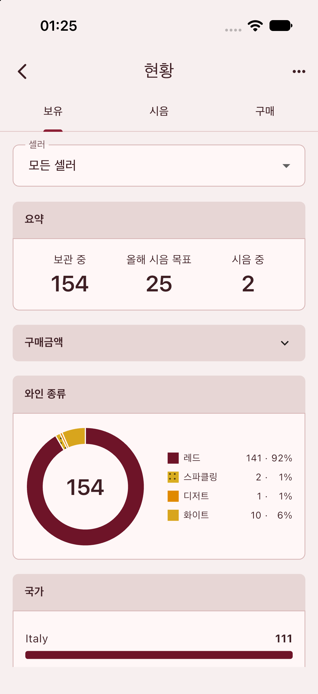
라벨을 촬영하거나 사진을 선택하면 인식할 영역을 조정한 뒤 AI로 와인 정보 입력을 도울 수 있습니다. 제안된 내용은 저장 전에 확인하고 고쳐주세요. 직접 정보를 찾고 입력하고 싶을 때는 평소 사용하는 AI에 보낼 질문을 복사하고, 받은 답변을 가져와 활용하실 수도 있습니다.
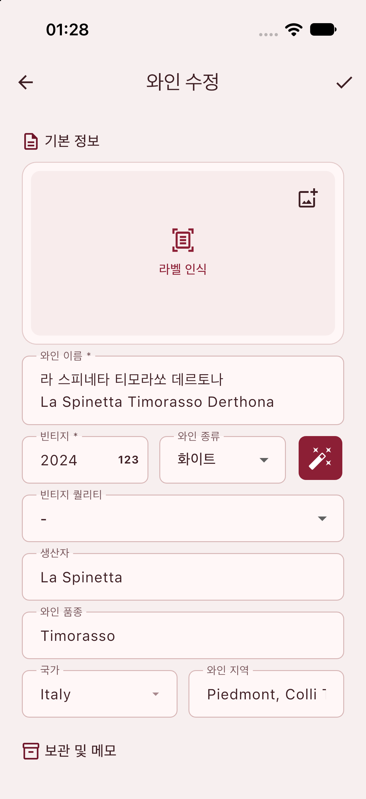
원하는 기간의 시음 기록을 바탕으로 내가 어떤 와인을 높게 평가했는지 돌아볼 수 있습니다. 앱 안에서 AI로 분석하거나 평소 사용하는 외부 AI를 활용하고, 확인한 분석을 저장해 다음 추천에 참고하실 수 있습니다. 기록이 적거나 정보가 부족한 부분도 함께 살펴봐 주세요.
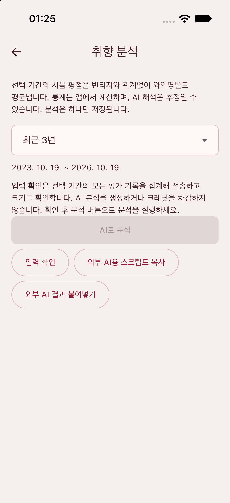
보유 와인 중에서 후보를 고른 뒤 내 취향, 음식, 상황에 맞는 와인이나 비교 시음할 조합을 추천받아 보세요. 내 취향에 맞는 추천에는 저장한 취향 분석을 활용합니다. 앱 안에서 추천을 받거나 외부 AI용 질문을 복사할 수 있으며, 제안은 와인을 고르는 데 참고할 의견으로 봐주시면 좋겠습니다.
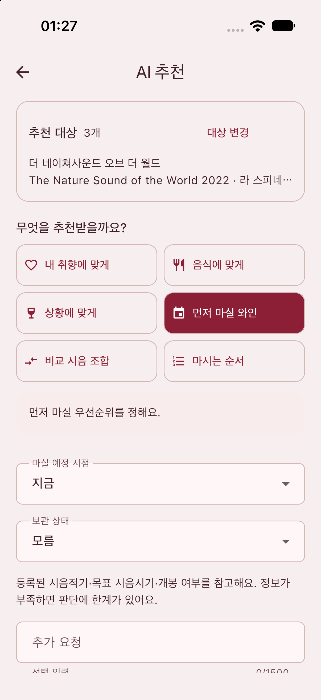
언젠가 마셔보고 싶은 와인은 구매희망 목록에 따로 모아두세요. 필요한 수량과 후보 구매처, 메모를 남길 수 있습니다. 실제로 구매하셨다면 적어둔 정보를 보유 와인 등록으로 이어서 사용하실 수 있습니다.
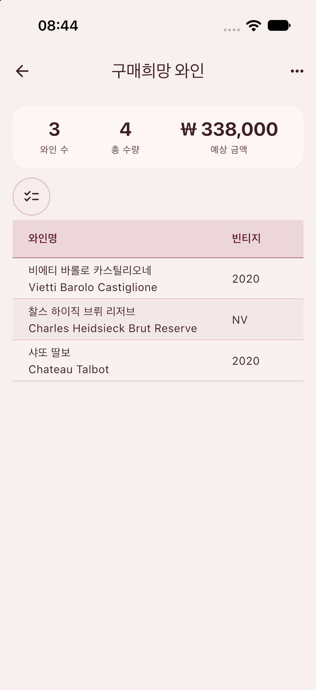
와인·층·셀러별 QR 라벨을 만들어 이미지로 저장하거나 인쇄할 수 있습니다. 라벨을 스캔하면 연결된 와인과 보관 정보를 바로 확인할 수 있어, 병이 여러 겹으로 쌓인 셀러에서도 필요한 와인을 찾는 데 도움이 됩니다.
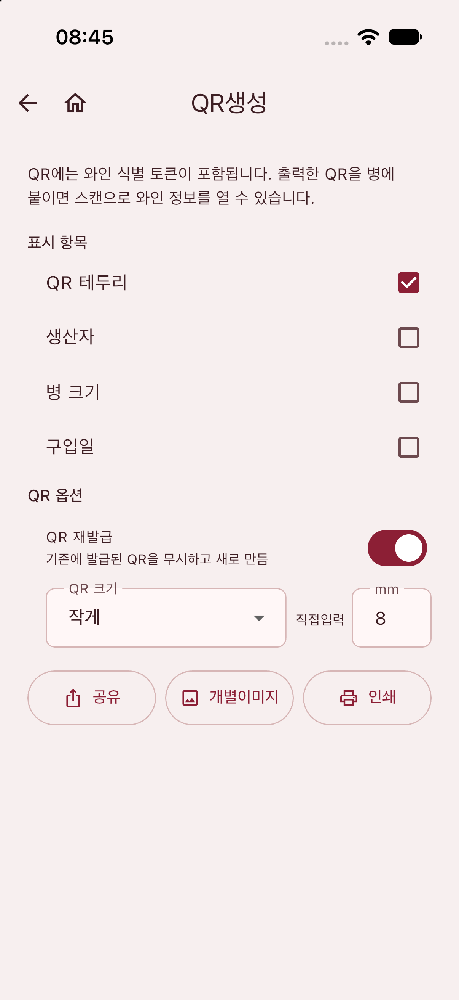
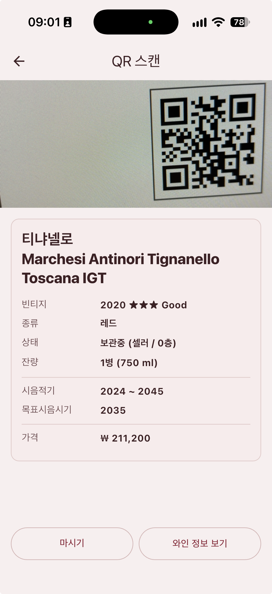
와인을 보관하고 시음을 기록하는 동안 나만의 배지도 하나씩 모입니다. 달성한 배지와 다음 목표를 살펴보고, 뜻밖에 발견하는 배지도 만나보세요. 마음에 드는 배지는 이미지로 만들어 공유할 수 있습니다.
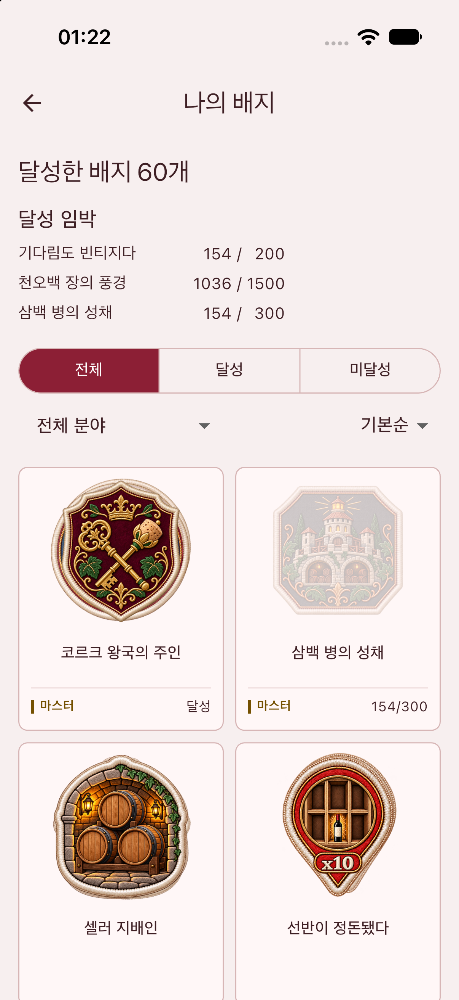
와인과 시음 기록을 CSV 파일로 내보내 스프레드시트에서 살펴보거나, 앱의 CSV 양식에 맞춘 파일을 가져올 수 있습니다. 사진까지 보관하고 싶을 때는 OL~ WINE 백업 파일을 이용해 주세요. 백업 파일은 직접 안전한 곳에 보관하셔야 하며, 복구하면 현재 기록이 파일 내용으로 교체됩니다. 기기 간 자동 동기화는 제공하지 않습니다.
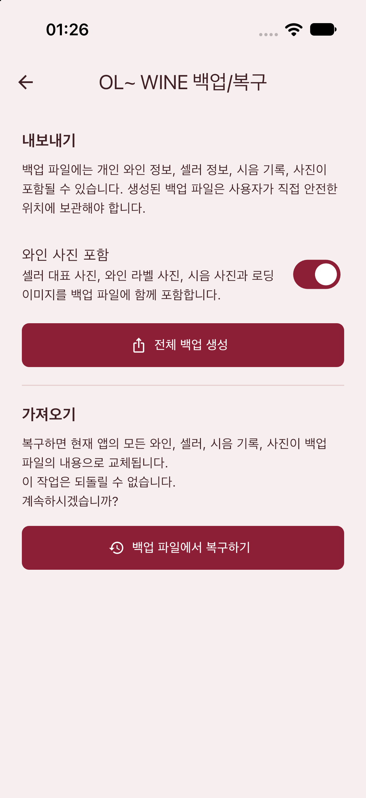
앱 내 AI 기능의 이용 가능 여부와 제공량은 앱의 안내를 확인해 주세요. AI가 제안한 정보와 분석은 정확하지 않을 수 있으므로 직접 확인해 활용하시기 바랍니다.
From bringing a bottle home to remembering the last glass, explore the features that help you look after your wines.
See what is in each cellar and how many bottles remain. Arrange layers and positions to match your storage, and keep track of each bottle, even when you own several of the same wine. Bottles outside a cellar can stay unassigned.
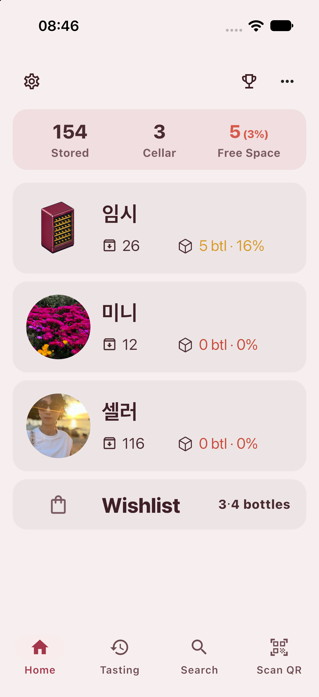
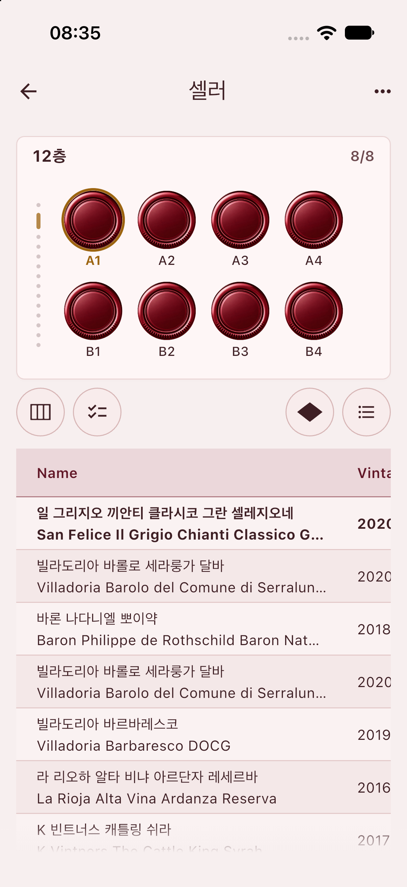
Record a small pour or a finished bottle and keep track of what remains. Save ratings, photos, notes, and impressions of body, tannin, sweetness, acidity, and aromas. Keep several tastings for one bottle, or browse the photo list to revisit the wine and the occasion.
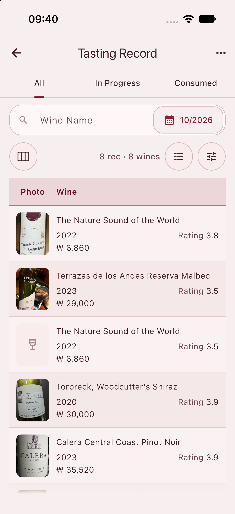
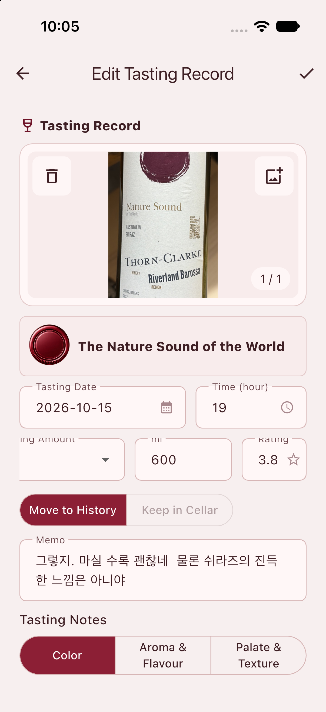
Plan a new layout by wine type, country, or drinking window, or choose your own priorities. Review the proposed layout, then follow the steps one bottle at a time or take bottles out and refill. For smaller changes, move or swap bottles, or mark their location as unassigned.
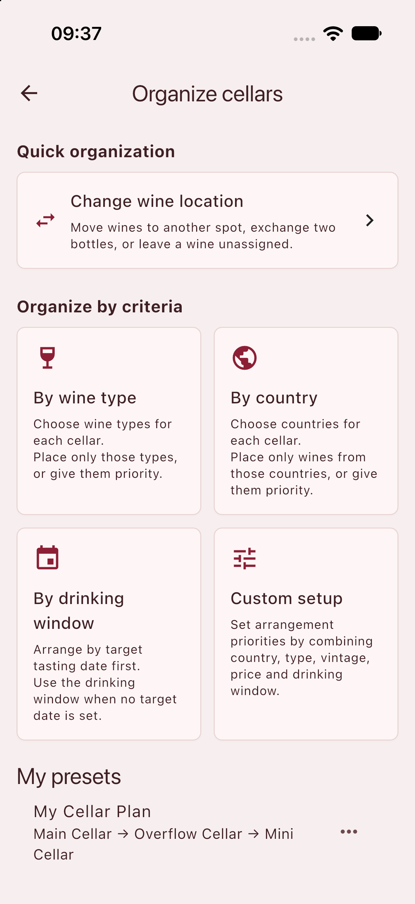
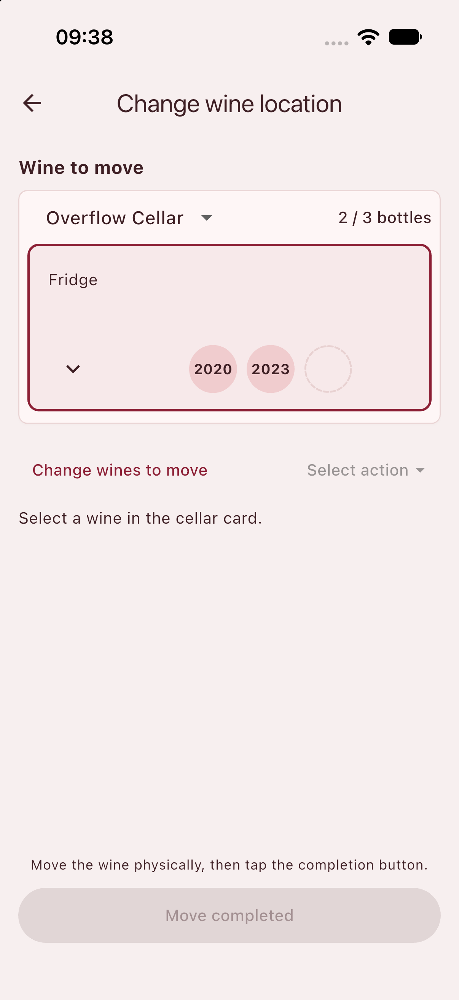
Search by name or narrow the list by cellar, type, country, vintage, drinking window, and more. Choose the columns and sort order that suit you. Switch between individual bottles and grouped wines, and review purchases and tastings of the same wine.
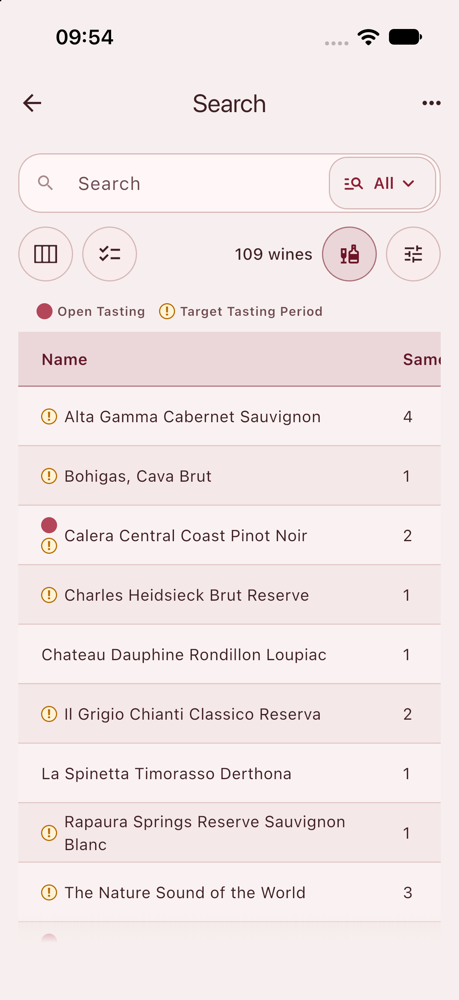
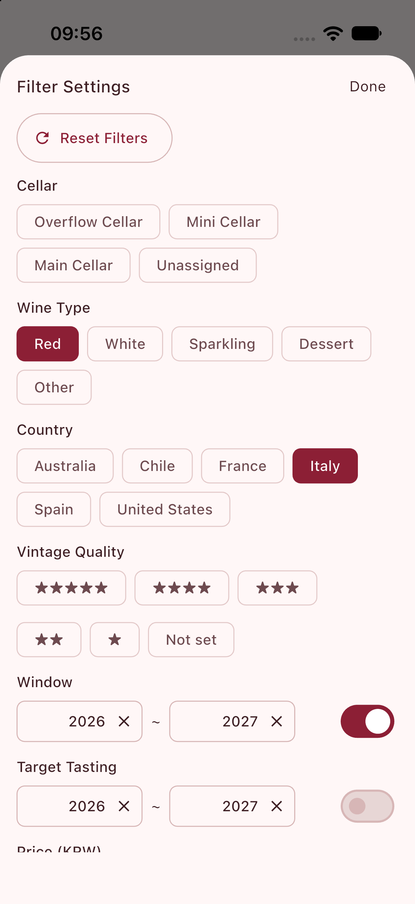
Explore your current collection, past tastings, and purchases in one place. See distributions by type, country, vintage, and other details, then open an item to look at the wines behind it.
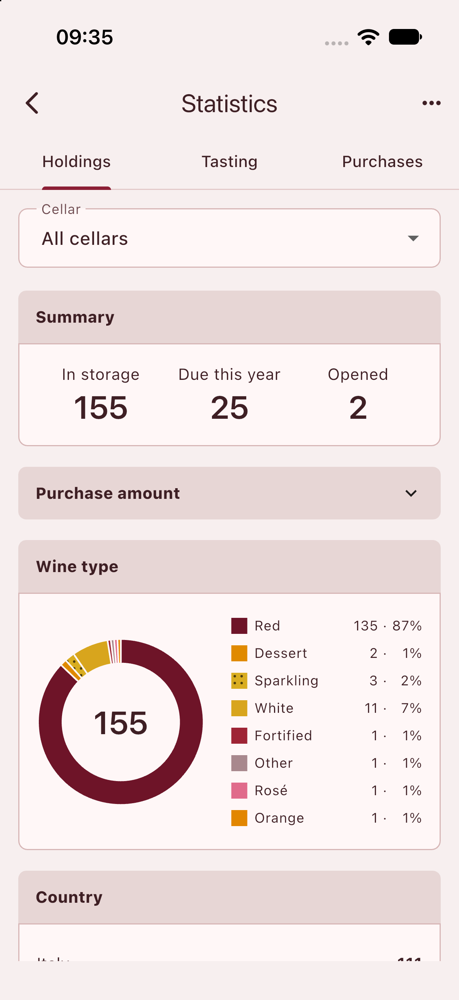
Take or choose a label photo, adjust the area to recognize, and use AI to help fill in wine details. Please review and correct the suggestions before saving. You can also copy a wine-information prompt for the AI you normally use and bring its answer back into the app.
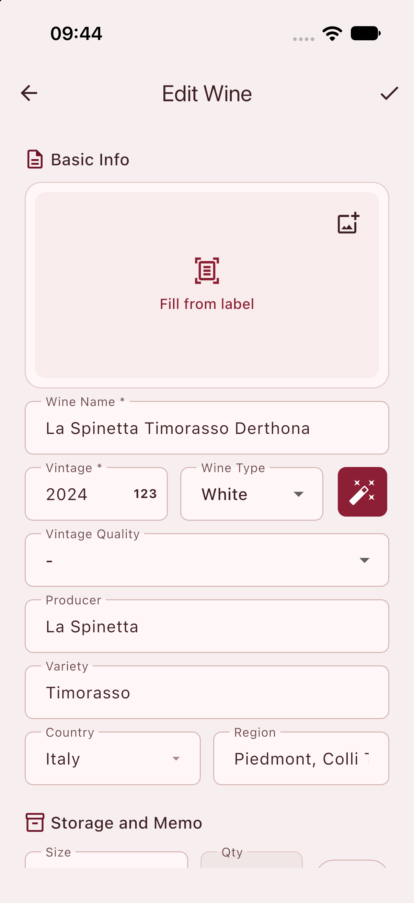
Choose a period from your tasting history to explore the wines you rated highly. Analyze your records with the in-app AI or an external AI you normally use, review the result, and save it to inform later recommendations. Consider the gaps too, especially where records are limited.
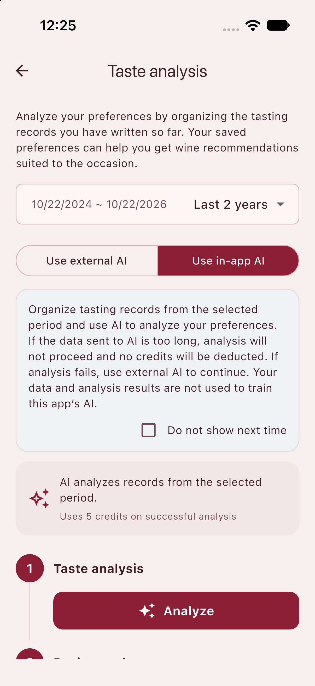
Select candidates from your collection and ask for wines to suit your taste, a meal, or an occasion, or choose a comparison tasting. Taste-based recommendations use your saved analysis. Request suggestions in the app or copy a prompt for an external AI, and treat the results as another perspective when making your choice.
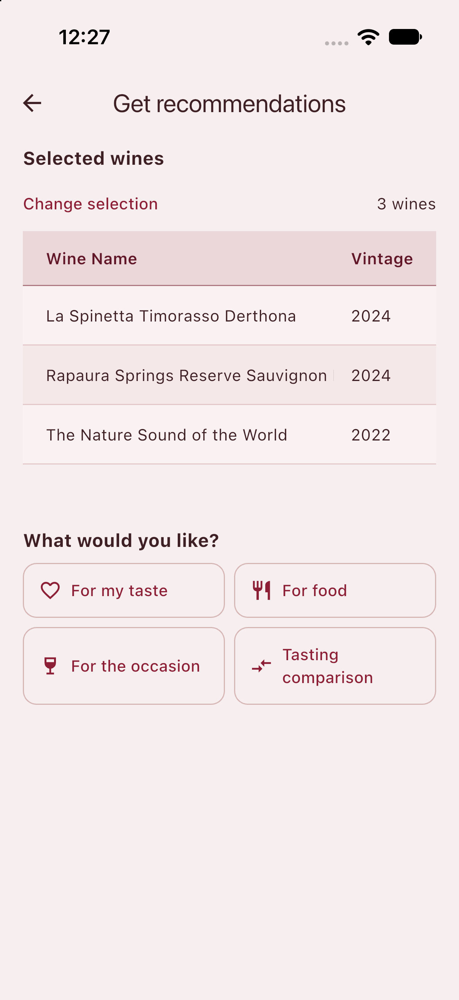
Keep wines you would like to try in a separate wishlist, with quantities, possible shops, and notes. When you buy one, carry those details into your collection without starting again.
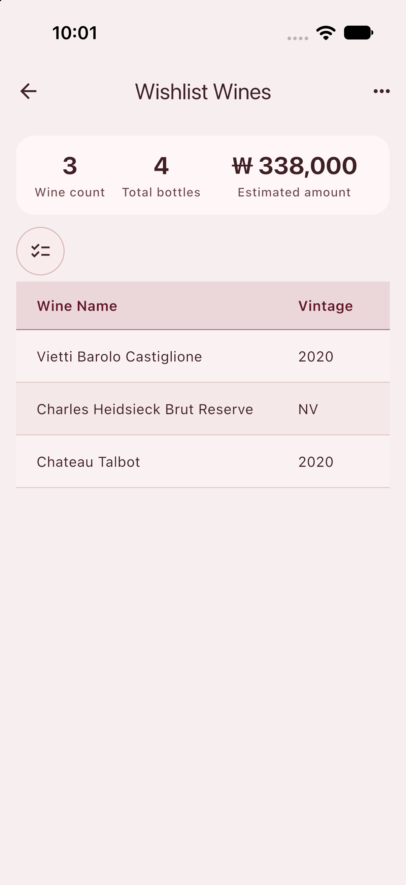
Create QR labels for wines, layers, or cellars, then save them as images or print them. Scan a label to open the linked wine and storage details, which is especially helpful when bottles are stacked out of sight.
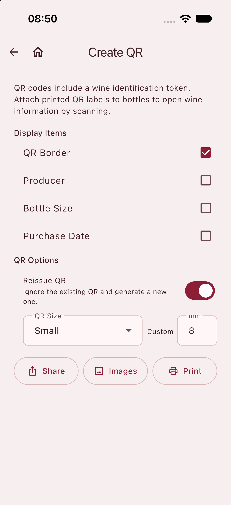
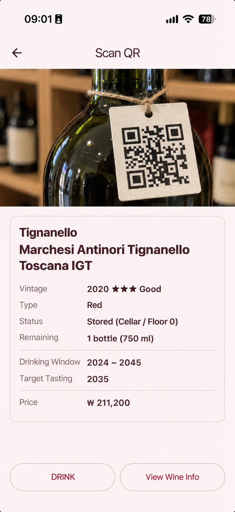
Collect badges as you care for your wines and record your tastings. Browse achievements, follow your progress toward the next milestone, and discover a few surprises. You can turn a favorite badge into an image to share.
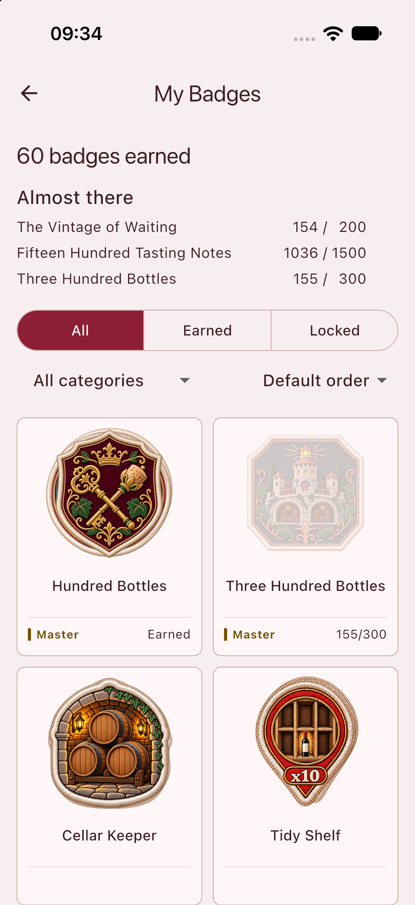
Export wine and tasting records as CSV to use in a spreadsheet, or restore a file that follows the app's CSV format. Use an OL~ WINE backup to include photos as well. Keep your backup somewhere safe: restoring replaces the current records with the file contents. Automatic syncing between devices is not available.
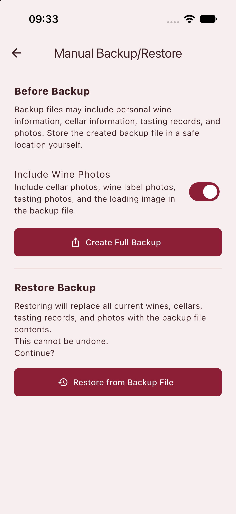
Please check the app for the availability and allowance of in-app AI features. AI suggestions and analyses may be inaccurate, so review them before use.